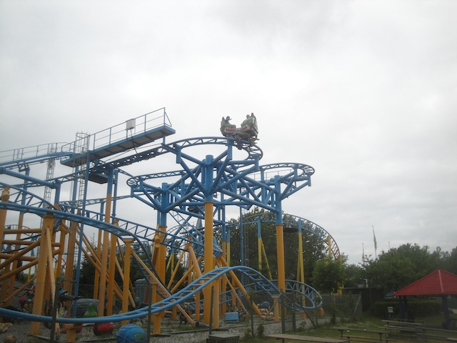
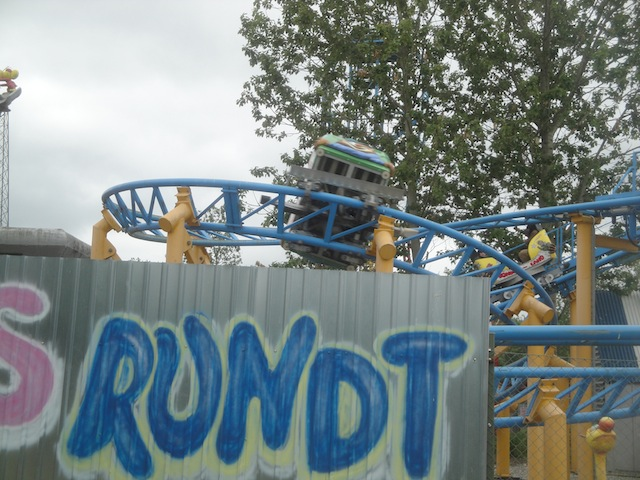
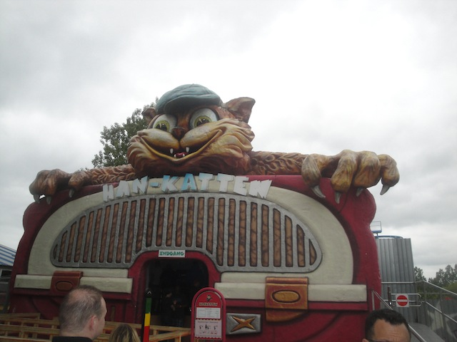

| |
Hankatten Review

We're here at Bon Bon Land. Today, we're going to be reviewing their spinning coaster. Hankatten. And being at Bon Bon Land, it has to have a strange theme. And it certainly delivers. This ride is themed to cats coughing up hairballs. FUN!!! Once you get in the seat, you pull down the lap bar, buckle the seat, and wait. Once you dispatch, you'll turn and head towards the lift hill. You start to climb up the lifthill. If you happen to be sitting backwards, you'll feel funny as you climb up the lifthill. But once you crest the lifthill, it won't matter which way you face. You then start to roll down the twisted first drop. We aren't spinning much yet, but it's still a very fun first drop. Very twisty. You gain quite a bit of speed there. But before you know it, you're curving back up, draining the speed we just lost. We then head up and go through a couple of switchbacks. During the switchbacks, you don't spin too well. I mean, you do spin, but it's not that intense. To be honest, I was pretty dissapointed in the spinning. It doesn't seem as strong as the other Gerstlauter coasters. After the switchbacks, you then start to head into a downward spiral towards the ground. And since we're also spinning, this makes it pretty disorienting as we just twirl closer and closer to the ground. Once you make a close call with the ground, you then spin up and head on a set of trim brakes that unfortunetly slow us down. =( This also doesn't make us spin as fast. We then dip down and then head up through a tight turn. This tight turn gets our car spinning again. And that makes up happy. Then you go through a small bunny hop. While there's no airtime, it's still really fun since we're spinning. Unfortunetly, we then hit the brakes as it's over. And the brakes on Hankatten suck due to their jerky nature. Hankatten is a really fun ride and definetly check it out if you're gonna be at Bon Bon Land anytime soon. How often do you get to ride a spinning coaster themed to cats coughing up hairballs!? =D
6/10
Location: Bon Bon Land
Opened: 2007
Built by: Gerstlauer
Last Ridden: June 16, 2014
I have ridden this exact same ride at the following parks.
Six Flags Discovory Kingdom
Six Flags Mexico
Hankatten Photos


Home
|